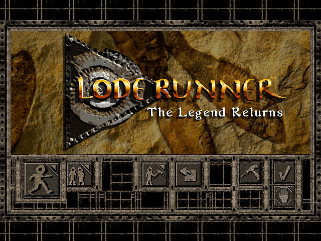
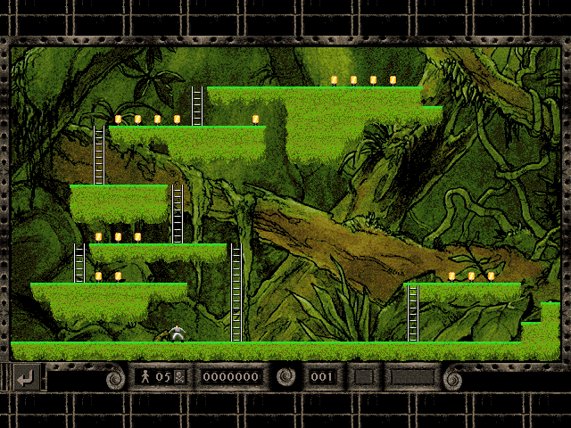

名稱：新超級運動員 (Lode Runner: The Legend Returns，英文版)
簡介：Presage 1994年出品的動作遊戲，由Sierra代理發行，台灣由智冠代理進口。遊戲原
為DOS版，同年推出了移植至Widnows的更新版 [待補]。


備註：本版為1.3磁片版（Windows版）
保護：磁片版無保護，真實光碟版為光碟
備註：DOS版在DosBox上無法播放音樂，原因不明。
限制：Windows版為16位元程式，只能在Win31/9x/XP系統上執行。
備註：光碟版有兩版，一個是偽光碟版，內容為1.1磁片檔+1.3更新檔，另一個是真實光碟版
（標示為LODE_RUNNER_CD），內容版本不明，會播放光碟音軌。
檔案：Update Patch V1.3.rar = 1.3更新檔
loderunn10.rar = 1.0磁片版（DOS版）。